3-2． Reading Global Map into TileMill¶
Once TileMill is started, a screen like Chart 3-2-1 is displayed. To start editing a map, select “New project” at the top left first.
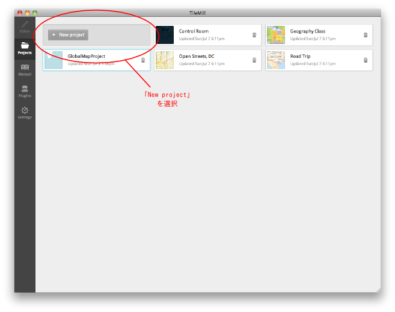 Chart 3-2-1． Startup screen of TileMill
Once selected, a project creation dialogue such as in Chart 3-2-1 is displayed. Here input the setting such as the file name and the explanation of the project. Check “Default data” and a simple global map layer is added in advance. It is better to check it to confirm that the position of a layer to be added is correct.
Click “Add” after finishing all the setting and the project is created.
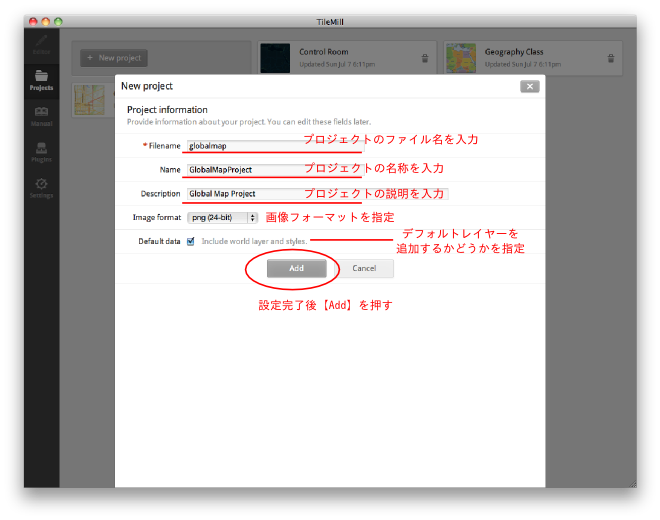
Chart 3-2-2． Creation screen of a project
When a new project is created, a screen like Chart 3-2-3 appears.
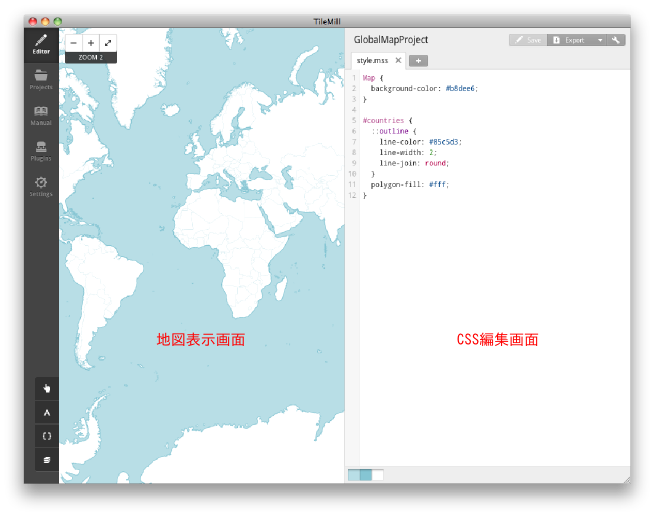
Chart 3-2-3． Initial window
Now add the data on hand. To add data, first click the bottom button of the four at the lower left and click “Add layer” in the layer management window displayed.
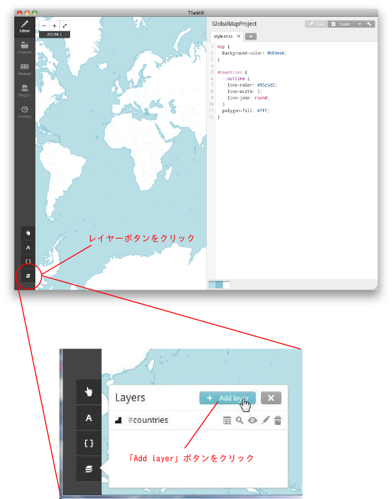
Chart 3-2-4． Add layer button
Then a screen as in Chart 3-2-5 is displayed. To select a file to be added, click “Browse.”
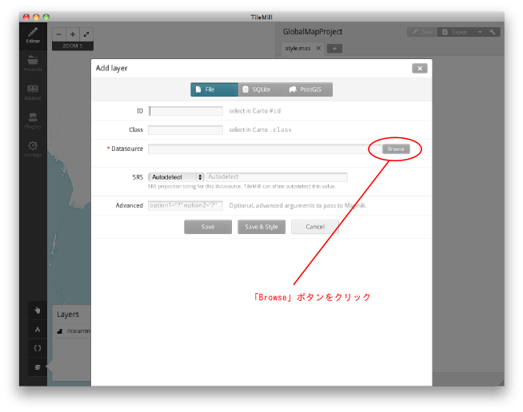
Chart 3-2-5． Add layer window
A file selection screen like Chart 3-2-6 appears. Select a file to be added.３－２－１
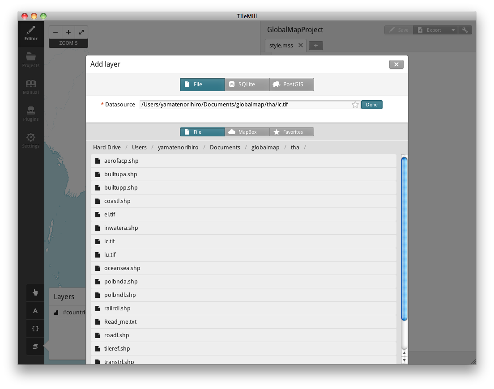
Chart 3-2-6． File selection screen
Once a file is selected, a name is automatically input in the [ID] field in Chart 3-2-5. This ID is used on setting the style in CSS. Input a different ID name to change the ID.
In [Class], input a class name. In CSS, the style specified in a layer ID is applied only to one layer since an ID is allocated to a layer respectively. However, Class can be allocated to multiple layers on the same name. Thus, a mutual style can be applied to several layers. Leave it blank if not using it.
Spatial reference is specified in [SRS]. If defined by a file, it can be “Autodetect.” But a user has to specify if not defined. At the time of writing this chapter, reading the spatial reference of GeoTIFF is not possible.３－２－２
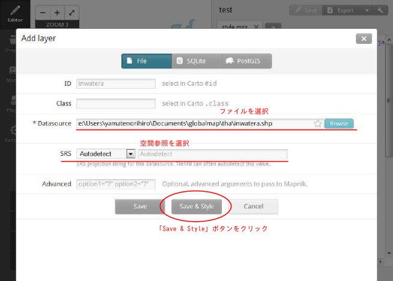
Chart 3-2-7． Add layer window
Once the setting is completed, click [Save & Style]. Then the default style of the layer is automatically set. By clicking [Save], the style is not set. When the style is not set, the layer is not displayed.
Chart 3-2-8 is an example of the display when a raster layer is added.
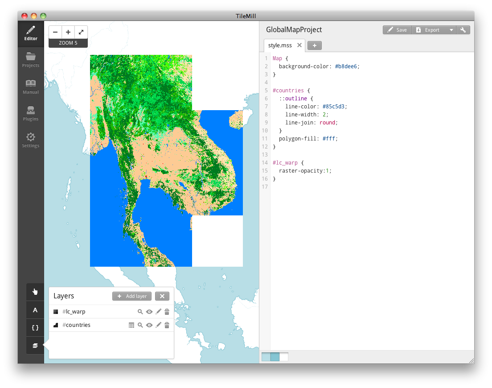
Chart 3-2-8． Display of raster layer
In [Layers] window, buttons are displayed for each layer. Explanation of each button is as in Chart 3-2-9.
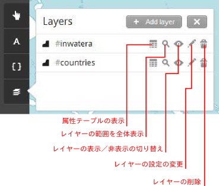
Chart 3-2-9． Layer window
When the layer area is not within the display extent, click Zoom to extent button. Also, performing the project setting enables designating the default display extent on opening the project. When doing so, referring to the layer range makes the setting easier.
For the project setting, click the button at the top right as in Chart 3-2-10.
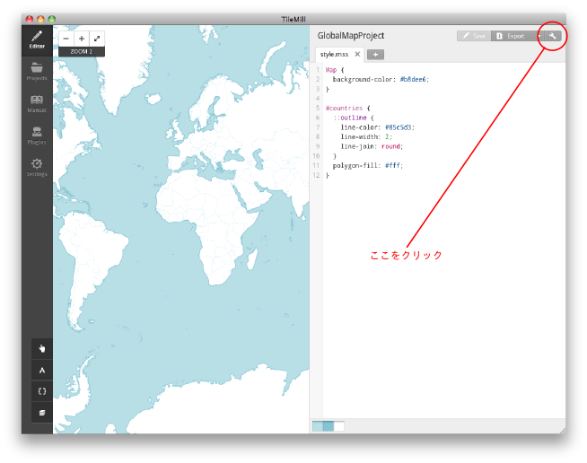
Chart 3-2-10． Project setting button
Click the project setting button and a screen as in Chart 3-2-11 is shown.
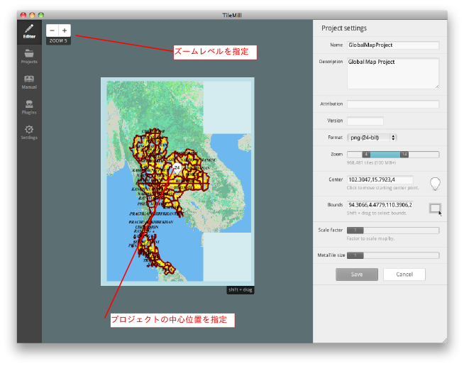
Chart 3-2-11． Project setting screen
About the details of the project setting is explained in the section 3-4. Export from TileMill and disclosure. Here, specify the zoom level and the center position at the time of initial display. Once the setting is completed, click 「Save」 at the lower right.
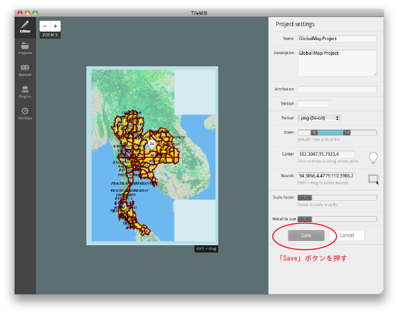
Chart 3-2-12． Saving project setting
Now, set the layer order after reading all the necessary layers. The layer order is set in the layer window shown in Chart 3-2-9 above.
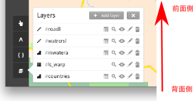
Chart 3-2-13． Layer window
Layers are rendered from the rearmost layer; the bottom layer is the rearmost and the top layer is the most front. To change the layer order, click the icon of each layer, drag and drop it at any position. To reflect the change, click 「Save」 at the top right.
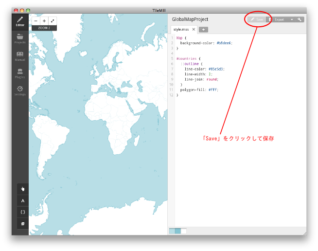
Chart 3-2-14． Saving the setting